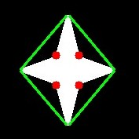

We saw what is convex hull in second chapter about contours. Any deviation of the object from this hull can be considered as convexity defect.
OpenCV comes with a ready-made function to find this, cv2.convexityDefects(). A basic function call would look like below:
hull = cv2.convexHull(cnt,returnPoints = False)
defects = cv2.convexityDefects(cnt,hull)
Note
Remember we have to pass returnPoints = False while finding convex hull, in order to find convexity defects.
It returns an array where each row contains these values - [ start point, end point, farthest point, approximate distance to farthest point ]. We can visualize it using an image. We draw a line joining start point and end point, then draw a circle at the farthest point. Remember first three values returned are indices of cnt. So we have to bring those values from cnt.
import cv2
import numpy as np
img = cv2.imread('star.jpg')
img_gray = cv2.cvtColor(img,cv2.COLOR_BGR2GRAY)
ret, thresh = cv2.threshold(img_gray, 127, 255,0)
contours,hierarchy = cv2.findContours(thresh,2,1)
cnt = contours[0]
hull = cv2.convexHull(cnt,returnPoints = False)
defects = cv2.convexityDefects(cnt,hull)
for i in range(defects.shape[0]):
s,e,f,d = defects[i,0]
start = tuple(cnt[s][0])
end = tuple(cnt[e][0])
far = tuple(cnt[f][0])
cv2.line(img,start,end,[0,255,0],2)
cv2.circle(img,far,5,[0,0,255],-1)
cv2.imshow('img',img)
cv2.waitKey(0)
cv2.destroyAllWindows()
And see the result:

This function finds the shortest distance between a point in the image and a contour. It returns the distance which is negative when point is outside the contour, positive when point is inside and zero if point is on the contour.
For example, we can check the point (50,50) as follows:
dist = cv2.pointPolygonTest(cnt,(50,50),True)
In the function, third argument is measureDist. If it is True, it finds the signed distance. If False, it finds whether the point is inside or outside or on the contour (it returns +1, -1, 0 respectively).
Note
If you don’t want to find the distance, make sure third argument is False, because, it is a time consuming process. So, making it False gives about 2-3X speedup.
OpenCV comes with a function cv2.matchShapes() which enables us to compare two shapes, or two contours and returns a metric showing the similarity. The lower the result, the better match it is. It is calculated based on the hu-moment values. Different measurement methods are explained in the docs.
import cv2
import numpy as np
img1 = cv2.imread('star.jpg',0)
img2 = cv2.imread('star2.jpg',0)
ret, thresh = cv2.threshold(img1, 127, 255,0)
ret, thresh2 = cv2.threshold(img2, 127, 255,0)
contours,hierarchy = cv2.findContours(thresh,2,1)
cnt1 = contours[0]
contours,hierarchy = cv2.findContours(thresh2,2,1)
cnt2 = contours[0]
ret = cv2.matchShapes(cnt1,cnt2,1,0.0)
print ret
I tried matching shapes with different shapes given below:
I got following results:
- Matching Image A with itself = 0.0
- Matching Image A with Image B = 0.001946
- Matching Image A with Image C = 0.326911
See, even image rotation doesn’t affect much on this comparison.
See also
Hu-Moments are seven moments invariant to translation, rotation and scale. Seventh one is skew-invariant. Those values can be found using cv2.HuMoments() function.